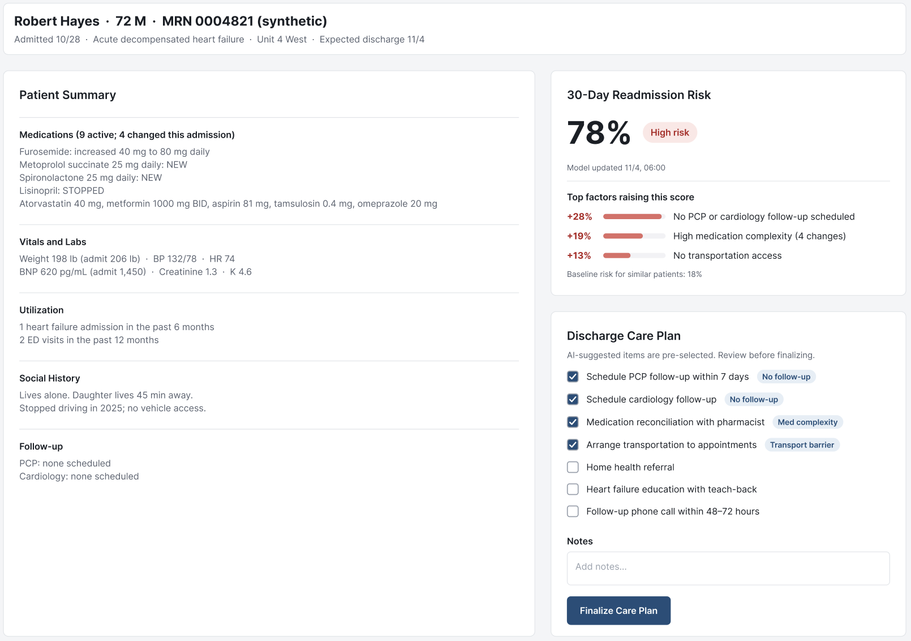

I find out what people actually need, and help teams build around it.
I'm a mixed-methods researcher. I lead with interviews, listening sessions, and synthesis with clinicians, families, faculty, and students, and back them up with surveys, usability metrics, and statistical analysis. I bring the rigor of academic research to questions that product teams need answered quickly.
Looking for a Summer 2027 UX research internship. Based in Chapel Hill, NC.
Case studies

Explainable AI for Discharge Planning
A discharge planning screen that explains an AI readmission score and links each risk factor to a suggested action. I led the Figma prototyping and I'm interviewing the clinicians who plan discharges.
Read the case study
A Seat at TABLE
Listening sessions, card sorts, and co-ideation with volunteer families at a food-security nonprofit. The research moved the brief from motivating parents to fixing scheduling and communication.
Read the case studyAI in the Classroom
Interviews with two user groups in UNC's AI Fellows program. What I learn becomes requirements for the AI-enabled course tools faculty are building.
Read about the study
EchoCare
A one-week concept for a harm reduction companion app. It hasn't been tested with users yet, and the case study lays out the research I'd do first.
Read the case studyHow I got here
In college I spent two years volunteering with the Twin City Harm Reduction Coalition in Winston-Salem: packing bags for mobile delivery, assembling naloxone kits, and leading trainings. I also served on the Forsyth Regional Opioid & Substance Use Team. After graduating from Wake Forest with a degree in sociology, I worked for two years with the NC Formerly Incarcerated Transition Program, supporting people with substance use disorders as they left prison and reconnected with care.
That work showed me how often there's a gap between the services that exist on paper and the services people can actually reach. I'm now a PhD student in Health Behavior at UNC Gillings, advised by Dr. Vivian Go, and I study that gap with qualitative and mixed methods. I want to bring the same work to product teams, especially in digital health and behavior change, though I'm interested in any team trying to fit a product into people's real routines.
What I do, and where I've done it
| Method | Where |
|---|---|
| Semi-structured interviews | |
| Prototyping in Figma and comparative prototype testing | |
| Surveys, usability metrics (SUS, NASA-TLX), and statistical analysis | |
| Listening sessions, card sorting, empathy mapping, co-ideation, and value/effort prioritization | |
| Codebooks, thematic and framework analysis, multi-coder analysis | |
| Facilitated expert debate and decision frameworks | |
| Concept design and conversational copy |
Tools: Miro, NVivo, Dedoose, Figma, Qualtrics, R, Stata, SPSS, Python, JavaScript
What I'm working on
- Interviewing clinicians about an explainable AI discharge planning tool
- Interviewing faculty and students for UNC's AI Fellows program
- Drafting a scoping review on human-centered design and implementation science
- Preparing an invited talk for the Global Health Implementation Science Symposium at Seoul National University (January 2027)
- Five active academic projects on harm reduction, implementation science, provider health, and AI literacy. See my research
Get in touch
I'm looking for a Summer 2027 UX research internship, and I'm always glad to talk about research roles, collaborations, or harm reduction work.
benwestlund@med.unc.edu